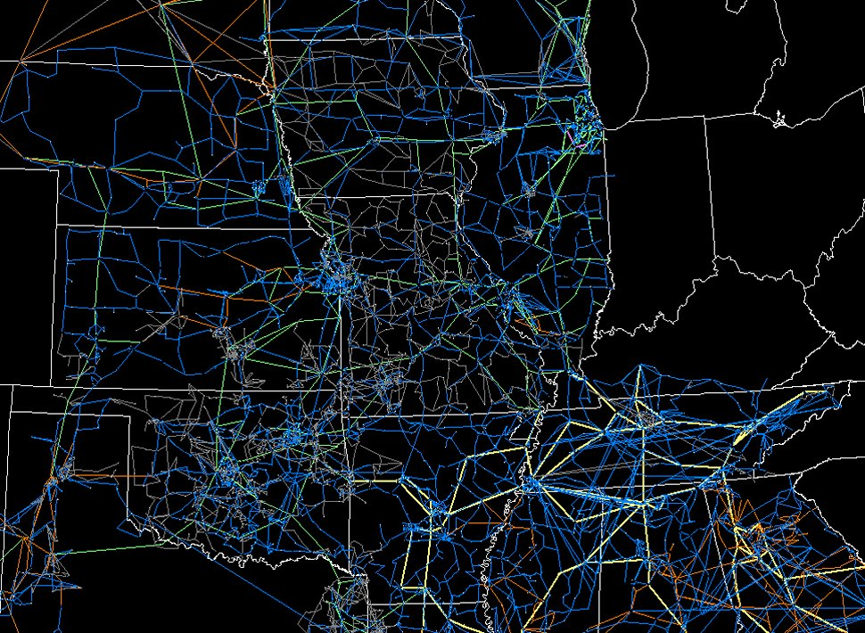

A Novel Visualization Technique for Electrical Power Grid Analytics
Background
Being able to monitor trends and anomalies in the power grid is important because so many other aspects of society depend upon it.
So, the vulnerability of the power grid is a major area of study. This has brought about the need for novel visualizations to better monitor the power grid.
Our chosen research paper, "A Novel Visualization for Electric Power Grid Analytics" addresses this need.
Current Visualizations
One Line Diagram
Current technical drawings are arranged to allow electrical engineers to wire circuits correctly.
They are static which has certain utilities, but does not allow for quick assessment of trends or anomalies that may be occuring in circuits over time.
The large grid includes all the information you may want when designing and implementing a power grid, but none of the real world usage data that is collected over time.
This diagram is an example one line diagram from a switching station at Clemson University.
Simulations
PowerWorld's Simulator is a tool currently used to address the need for power grid analytics. It uses alot of colors, symbols, and geographic location to get information across.
Below are examples of their interactive one line diagrams.
However, there are over 50,000 buses in North American power grids. When you want to analyze on a large scale, visualizations like these can be extremely computationally expensive.
Below are some examples of the interactive visualizations for large geographic areas.

So, the researches for our paper were looking for less computationally expensive visulations that add some analytical power, and they settled on weighted graphs.
Weighted Graph Visualizations
The research explains that by using a node graph users can still position the nodes relative to eachother as they would be geographically without constricting the nodes to locations on the map.
Doing so introduces the novel part of their visualization: weighted links and nodes. In the ideal scenario for the researches, the user could add in symbols and icons based on their needs, and when utilizing even larger datasets the
node graph can summarize nodes and remove links to simplify the visualization which is often times more useful.
For our purposes we are focusing on the novel use of weighted links and nodes. The visualization they propose utilizes a force directed layout. We can represent values with the forces on the links, and different values with the forces on the nodes.
Example link weighting factors include: "resistance, reactance, impedance, real power flow, reactive power flow, real losses, reactive losses, and so forth."[1]
Example node wieghting factors include: "voltage magnitude, voltage angle, real power injection, reactive power injection, real load, reactive load, and so forth."[1]
One of our members is an Electrical Engineer working on Clemson University's grid so out data includes Watts, Amperes, and Volt-Amperes recorded on our local buses.
For Reference: Electrical Terms Simplified
Power Grid: A network of power generators which distribute power/electricity to users. Bus: Places in the system where network components like generators and feeders connect.
Watt (W): The amount of power/electricity consumed. A higher watt value will indicate more power being used. Ampere (A): The intensity of an electrical current. If it were water it would be the amount of water flowing. Volts (V): Difference of potential that drives the current against the resistance. If it were water, it would be the water pressure. Volt-Ampere (VA): V * A, represents apparent power. In contrast, Watts are real power.
Voltage Slider:
Voltage:
Volts
Current Slider:
Current:
Amps
Apparent Power Slider:
Apparent Power:
Volt-Amps
Example
Date Slider:
Figure A shows link weighting applied to the link connecting the clusters. Figure B shows node weighting applied to the clusters. Figure C shows both. Notice how the combination of the weights shows areas of obvious contrast.
Final Visualizations
Simulated Visualization
Clemson's busses make a circular network and turns out to be very small which doesn't display the full usability of the visualization. Below is simulated data and nodes based off the clemson network.
Citation: P. C. Wong et al., "A Novel Visualization Technique for Electric Power Grid Analytics,"
in IEEE Transactions on Visualization and Computer Graphics, vol. 15, no. 3, pp. 410-423,
May-June 2009, doi: 10.1109/TVCG.2008.197.